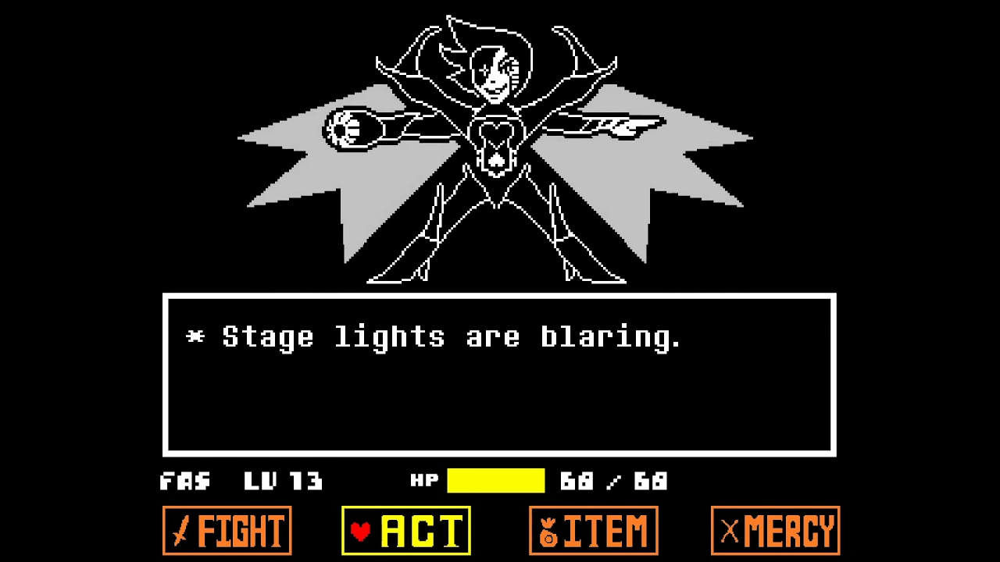
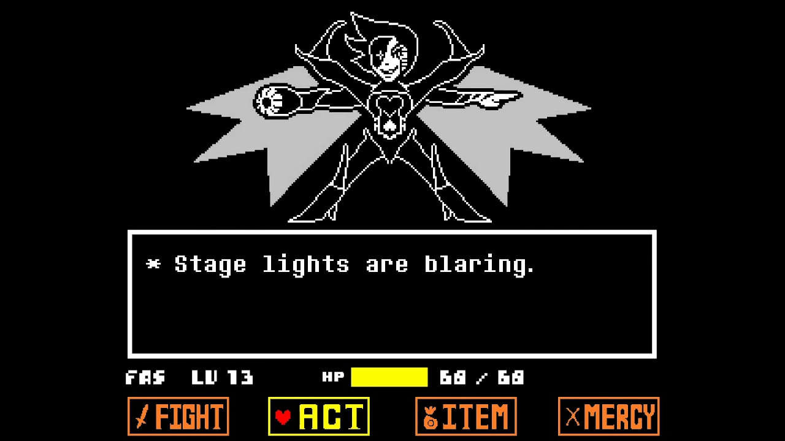
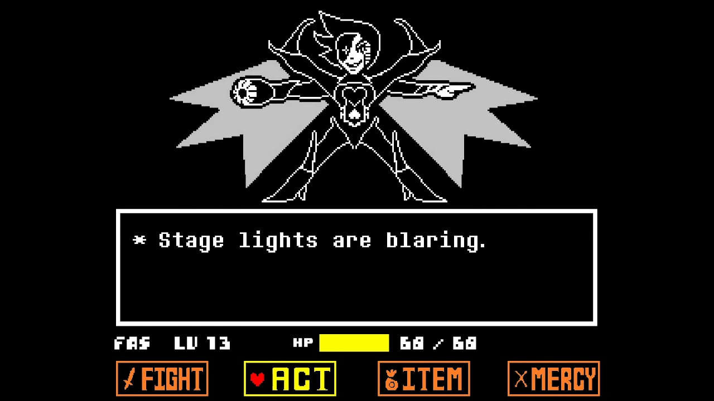
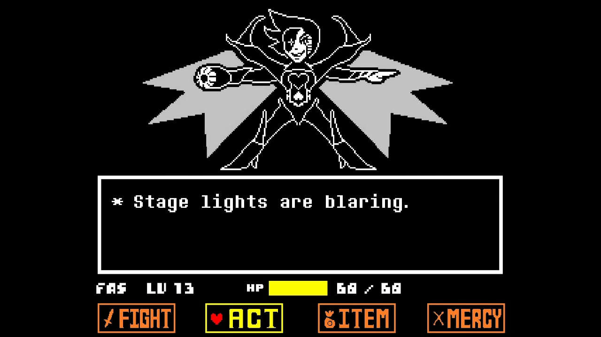

I took inspiration from one of my favorite games, Undertale. Although I would be able to make more interesting backgrounds and intricate game mechanics, the timeframe of this class forces me to cut corners wherever I can.

 

 
